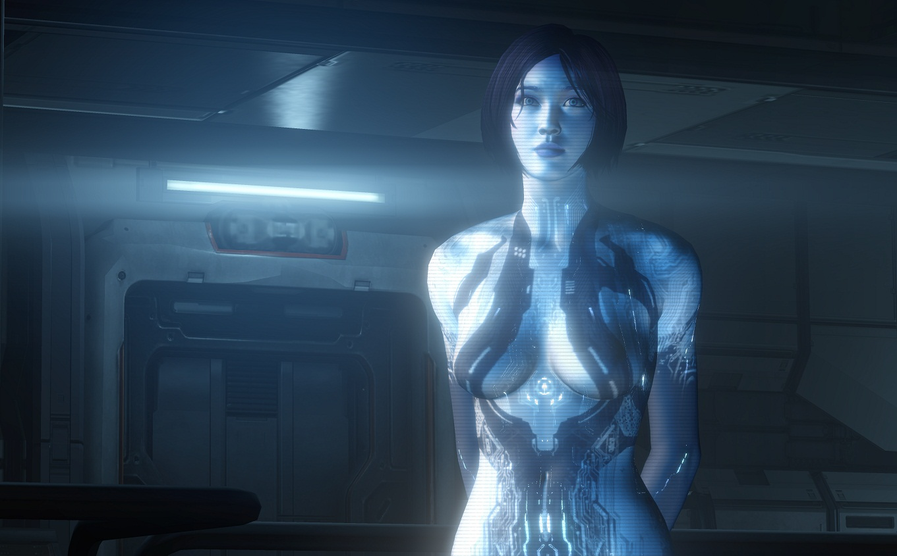
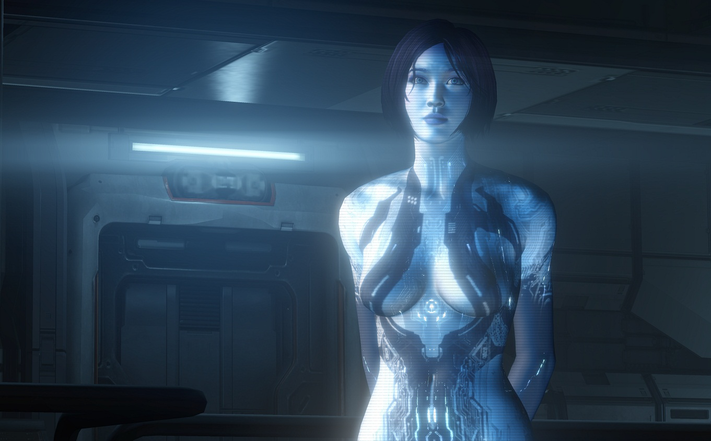

CHAPTER 1: ROBOTICS AND ARTIFICIAL INTELLIGENCE
Robotics and artificial intelligence are two completely separate technologies, though they could be the basics of a fully independent robot. In this we can see similarities with humans. The robotics would function as the muscles and joints of our human bodies, granting the machine movement in any possible direction. And the artificial intelligence would be the human brain, or more accurately said; the nerve system, here is where the ‘thinking’ happens. This comparison between robotics and AI and the humans is the framework for this thesis. I will introduce the world of robotics and intelligence to create a better understanding of the terms and the thesis question. It’s important to understand the technology and what it could potentially achieve, to understand why there is an interest in copying the human anatomy and brain in technological developments.
Artificial Intelligence
Artificial intelligence (AI) as the science and engineering of making intelligent machines, especially intelligent computer programs said John McCarthy in 2007 1. And the meaning of intelligence is a computational ability to achieve certain goals. It would make computer programs capable of understanding certain data and – if the AI is designed to it– can process this information and eventually respond to it by executing a new task. To give a rough example, when asking Apple’s Siri a question, it analyses your spoken sounds and transforms these into words. Then it searches for an answer on the internet and presents information back to you. But AI is a very complex and big research, in order to narrow it down I will focus on two main types of artificial intelligence, weak AI and strong AI.
Weak (or narrow) AI means that the machine that is running the AI can appear intelligent, but it only simulates the intelligence, thus it can never be aware of what it is actually doing. In other words, the program is only following a strict set of instructions that it needs to execute. An example of weak AI is spell-checking software. When typing a wrong word the computer instantaneously runs through the dictionary looking for words with the same letters and hands back a list with several potential correct words, after finishing this algorithm it can eventually display a new list where the user can select and correct the mistake, or it does so itself. It seems that the computer is intelligent because we can feel like it understands what we want to write and that it is assisting us by correcting the fault, but it only executes a series of tasks in order to solve a problem.
Strong AI is when a (hypothetical) machine’s intelligence is completely functioning and equal to a human’s intelligence. Meaning that it would be possible for the machine to duplicate the full range of human cognitive capabilities. It will be able to imagine, think, reason, etc., activities that we do with our brains. Jack Copeland says; “The reputation of this area of research has been damaged over the years by exaggerated claims of success that have appeared both in the popular media and in the professional journals. At the present time, even an embodied system displaying the overall intelligence of a cockroach is proving elusive, let alone a system rivalling a human being.” 4 A proven strong AI is as of now non-existent, but researchers and engineers are still developing this technology. It might become a reality in a not-too-distant future. Ray Kurzweil from Google believes that in 2029, computers will be able to do all the things that we humans are able to do, but even better.2 By that time, we can possibly see a new form of human evolution.
There are many systems that have a weak AI, limited to perform a certain task. These tasks are executed outside of human comprehension and control, we can not perceive what is happening at the moment. There are many risks and fears that come with AI, and not every citizen is feeling safe about the idea of software controlling aspects of our daily lives. This could be an unconscious assistance that is for example the autocorrect or speech recognition which is in most cases is by default installed on our smartphones. Or it could be bigger, like the complex HFT (High Frequency Trading) algorithm that controls the financial markets. The very same algorithms that caused the flash crash in May 2010.
"Narrow AI could knock out our electric grid, damage nuclear power plants, cause a global-scale economic collapse, misdirect autonomous vehicles and robots… Weak, narrow systems are extremely powerful, but they’re also extremely stupid; they’re completely lacking in common sense. Given enough autonomy and responsibility, a failed answer or a wrong decision could be catastrophic.” 6 As said in 2013 by George Dvorsky. Even though the description of weak or narrow AI sounds harmless, it can do great damage to our digital systems because of the incredible speed a computer can harness. When an AI is the cause of one of these catastrophic events, we might possibly be to late to realize it.
Strong AI is the type of AI that is often being debated, there are endless stories and films in our popular culture about a type of AI that could either be a true friend, a savior of mankind, or the end of the human race. In contrast to weak AI, strong AI is not limited. The fear that is often connected to strong AI is the ability that it can develop itself, to improve, the same way that humans improve their capabilities over time. The reason this debate is ongoing is that a learning, strong AI is likely to surpass its human creators. It becomes smarter, faster, more developed and once surpassed, the program would then be completely out of our control.
Stephen Hawking, a famed physicist mentions in a column in The Independent; “Success in creating AI would be the biggest event in human history. Unfortunately, it might also be the last, unless we learn how to avoid the risks.”5And he is not the only person warning the people about AI, Elon Musk, founder of SpaceX, co-founder of PayPal and Tesla Motors, shares the very same thought. They both believe that if we do not limit a strong AI, the dangers suddenly increase because of its superior capabilities. If we are not capable of understanding the situation after the AI has been created, we will lose control of what we thought to be ours. We humans have evolved into intelligent beings but the point when a machine outsmarts us, what will our place then be?
Robots
Robots are mechanical devices that are capable of independently executing tasks after it has been given a string of computational data. Robots are developed to complete it’s tasks without constant human input. A very obvious but clear example of a robot, that doesn’t come from science-fiction, are the huge mechanical arms that are working in the production lines of car factories today. These arms are programmed to execute certain movements and tasks when a yet-to-build-car passes by on the production line. These robots work with great precision once it has been given the correct instructions and will never, unlike us humans, grow tired of its job. Leading to a situation where some tasks involving humans have been replaced by robots in the car production line.
But robots are not only to be found in the industrial sector, they can now be found in our homes as well. It has not become a standard yet, but a simple example of a robot that is finding its purpose amongst our family is the automatic vacuum-cleaner, lawn mowers, self-cleaning toilets and so on. Small devices such as the vacuum cleaner, will once it’s receiving an instruction, start to clean while moving around inside the space it currently is in. It notices when to stop after ‘feeling’ a wall or another impassible object and continues it’s cleaning task by making a small turn in another direction, once done it can find its own way back to the recharging station. It will completely take away the time-consuming effort of vacuuming.
So, generally speaking robots are currently being used to replace humans tasks that are mundane, dangerous or exhausting. They can be deployed in areas which are not easily accessible for humans, it could be either working deep down in the ocean or up above, in outer space. Robots functionality and abilities sounds like an life changer in a good way, by replacing humans for work that is either too difficult or unwanted, it also changes lives in a negative way. One example can be how robotics have been blamed for a rising unemployment, also known as technological unemployment. A discussion that has been going on for a very long time, and has been called the Luddite Fallacy under the economics. This is just an example to show the implications of robotics in the our daily lives.7
“Humans will continue to be useful workers because of things like empathy, creativity, judgment, and critical thinking. Traditionally, increased productivity correlates with economic growth and job growth, since human labor has historically driven production. A robot workforce, however, can drive productivity and growth on its own, eliminating jobs in the process. That might mean the whole paradigm of exchanging labor for pay starts to break down. … By eliminating the need for people to work, robots would free us up to focus on what really makes us human. The scariest possibility of all is that only then do we figure out what really makes us human is work.” says Wired Magazine’s Marcus Wohlsen. Robots are constantly being criticized, today because we are afraid of the fact it causes a technological unemployment, or our way of ‘doing’ stuff. Or maybe because the engineer designs it in a way, it would be physically superior than we are.
This thesis will depict a situation about a combination of robotics with a strong AI. Basically the human replicated into a machine. A sentient, conscious, independent machine. What are the reasons to personify robotics and artificial intelligence? Why is there a development in duplicating our species into a mechanical and digital form? Will we witness another step in human evolution?
ABSTRACT
We live in the rapid changing Information Age, a time in which we grow to live in a symbiosis with technology. It has become a part of our daily routine, continuously evolving into more complicated inventions.
Advanced technology is on the verge of becoming a part of our households. One example is the development of a personal robot with it’s own artificial intelligence built to assist us with our daily tasks. A seemingly innocent invention, but some researchers mean that this can be the biggest mistake in human history.
Popular-culture has attempted to to visualize robotics based on human aesthetics, creating our technological copies. A tendency that is also seen within the development of robotics; it’s anatomy, it’s way of thinking and even the way it speaks has strong resemblances to humans. How would the way humans perceive robotics change when we change “it” to a “he” or “she”? What is the purpose of personifying such comprehensive and inhuman machines?
These are questions I will attempt to answer by looking at the situation from two angles. By presenting the reasons for and against personifying robotics I want to create a better understanding of the technological development. Why it looks like it does, how it will infiltrate our daily lives and look at how human behavior towards robotics might change with it.
What is the purpose of personifying artificial intelligence and robotics?
 
